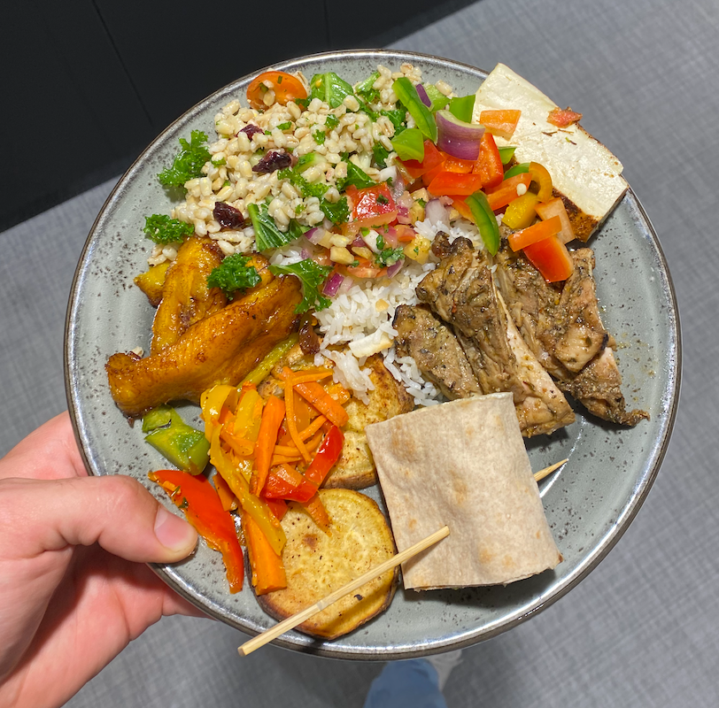

Professional Experience
Chapter 1: Zoox
This past summer I spent 14 weeks in San Francisco working for the autonomous ride sharing company Zoox. They are working to make transportation safer, cleaner, and more productive! These are all motives that I stand behind, and the mission-driven environment of Zoox made the decision to join easy.
The goal of vehicle autonomy in dense urban areas is bold, and even more so while developing a ground-up vehicle platform. I was lucky enough to work on the Advanced Hardware Engineering team, which is devoted to integrating the unique and original hardware that is required to enable autonomous driving. I was quickly immersed in the workflow and had my hands-on from day 1. My assigned project involved testing of an embedded ECU unit, to ensure it could perform all functions for the lifetime of the vehicle. It was a challenge to rapidly learn and understand the complex systems of the vehicle and gain insights into how various control systems interacted. I faced this challenge by digging deep into documentation, leveraging the surprisingly unique coursera offerings, and asking a LOT of questions. One of my highlights of this experience was the willingness of others to answer my questions and engage in meaningful conversation to help me learn and accomplish my goals. The collaborative environment, responsibility, and permissions I was given made me feel as though I was much more than an intern.
With helpful coworkers at every turn, and an enabling fail-forward environment, I was able to attack my projects with efficiency and enthusiasm. I was able to spearhead and guide multiple firmware, mechanical, and electrical improvements for various projects I worked on. It was incredibly exciting to see my dedication make a true difference at the production level.
Challenges
At such a fast moving company that is deep in development, abstracting my work was not always the easiest of tasks. With team changes and limited knowledge and documentation, collecting the proper information was the name of the game. I created spreadsheets to map who was knowledgeable in what fields and focus areas, while keeping a running personal log of knowledge and key tidbits I picked up every day. I also did my best to spread and publish my learnings, by contributing significant documentation whenever I saw a gap. I was approached by a number of my teammates and even those from other teams, receiving words of appreciation. It was cool to see that going the extra mile to share ‘tribal knowledge’ made ripples in the engineering process.

One of the largest challenges that any intern faces while working for a company is deciding what is in/out of the scope of their role. After a couple short weeks at Zoox and a conversation with my manager, I created a new rule for myself: ask for forgiveness not permission. The ‘go for it’ mentality took my productivity to another plane. Learning how to apply my best judgment without leaning into the chain of power earned me the trust of my colleagues and produced many great developments to the product!
Leveraging my Internship
.
.
.
.
.
.